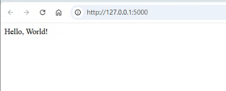
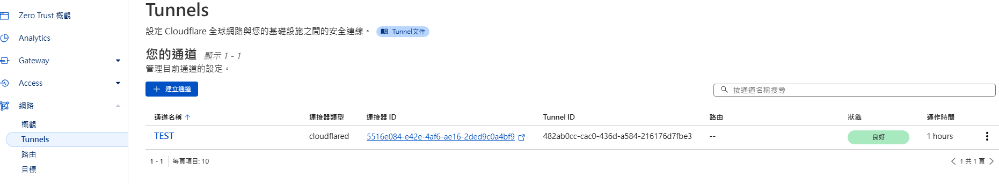
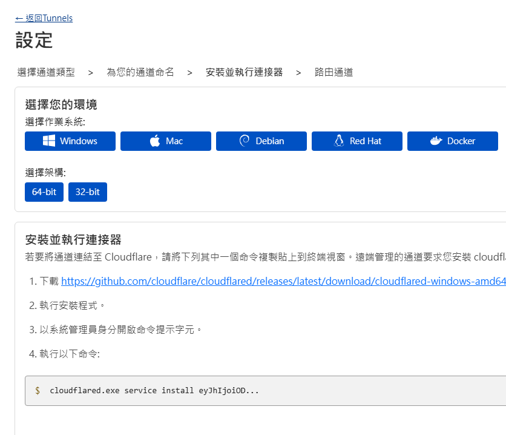
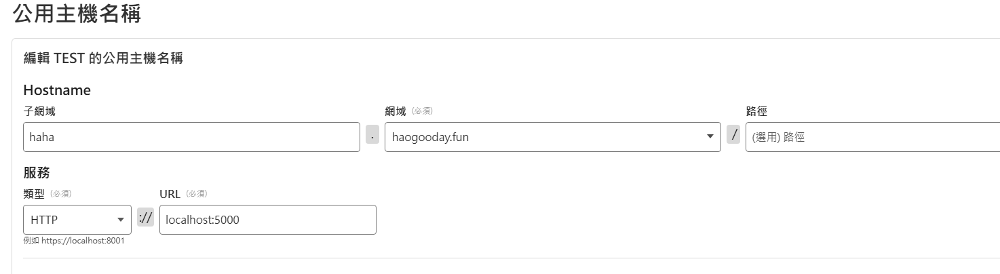
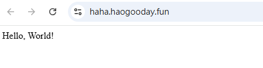
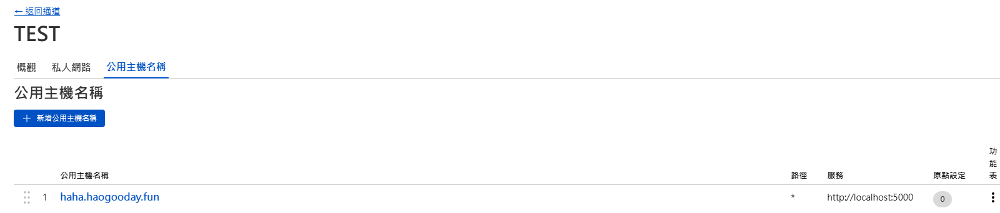
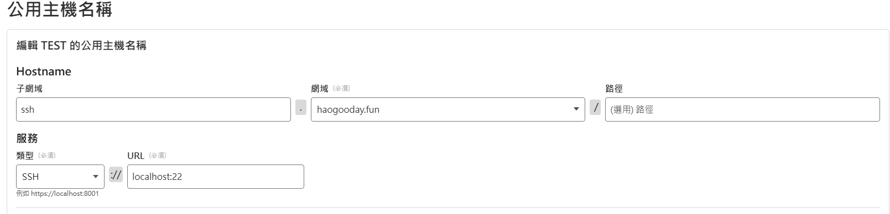

使用 Cloudflare Tunnel 實現內網服務穿透與 SSH 連線
記錄如何在受限網路環境（如社區網路、多層 NAT）中，無法直接對內部設備進行 SSH 連線的情況下，透過免費的 Cloudflare Tunnel 服務，實現 HTTP 與 SSH 的內網穿透與遠端存取。
環境說明
- 所處網路為社區型結構，內部架有小米路由器，外部還有一層網路控管。
- 無法從外部直接 SSH 連入設備，即使已在路由器中設定 Port Forward 也無效。
- 目標設備作業系統為 Windows。
事前準備
- 一組 Domain
- 完成 Cloudflare 帳號註冊
HTTP 服務穿透教學
在主機快速起一個測試頁面
本機localhost:5000可連到。
到 Cloudflare 把自己的網域加入
遵循網站上的指引操作即可。左側選單 Cloudflare Zero Trust → 網路 → Tunnels 建立通道，選擇 cloudflared，簡單命名

環境設置（以 Windows 為例）

- 依序完成：
- 下載並安裝 cloudflared。
cloudflared-windows-amd64.msi - 以系統管理員身分開啟命令提示字元。
- 安裝服務：其他常用指令：
cloudflared.exe service install <token>
Get-Service cloudflared # 查詢 cloudflared 狀態
Stop-Service cloudflared # 停止 cloudflared
Restart-Service cloudflared # 重啟 cloudflared
cloudflared.exe service uninstall # 解除安裝 cloudflared
cloudflared --version # 版本查詢
- 下載並安裝 cloudflared。
- 依序完成：
設定穿透對應的本地網址與 port

直接瀏覽剛剛的網域就完成了

SSH 服務穿透
在 Cloudflare 公用主機名稱新增公用主機名稱

設定如下即可

目標主機也要安裝 cloudflared
無法使用傳統 SSH 方式連線，需透過
cloudflared指令或設定ProxyCommand。直接下指令連線範例：
ssh -o ProxyCommand="cloudflared access ssh --hostname ssh.haogooday.fun" user@ssh.haogooday.fun
或可在
.ssh/config中設定，簡化操作：Host ssh.haogooday.fun
ProxyCommand cloudflared access ssh --hostname %h
User user之後即可直接使用：
ssh ssh.haogooday.fun
補充：Windows 安裝 OpenSSH Server
# 安裝 OpenSSH Server |
完成後可本機測試 SSH 是否啟用成功：
ssh localhost |
結論
Cloudflare Tunnel 是個非常實用的工具，特別適合在無法直接開放 Port，或處於多層 NAT（網路位址轉換）的社區網路環境中使用。只要建立好 Tunnel，就能安全且穩定地連回內部主機，不需額外設定防火牆或路由器，且完全免費。
只要能 SSH 進去，後續就能做很多事情，例如：
- 反向代理（
ssh -R） - 動態轉發（
ssh -D，SOCKS 代理） - 本地端口轉發（
ssh -L）